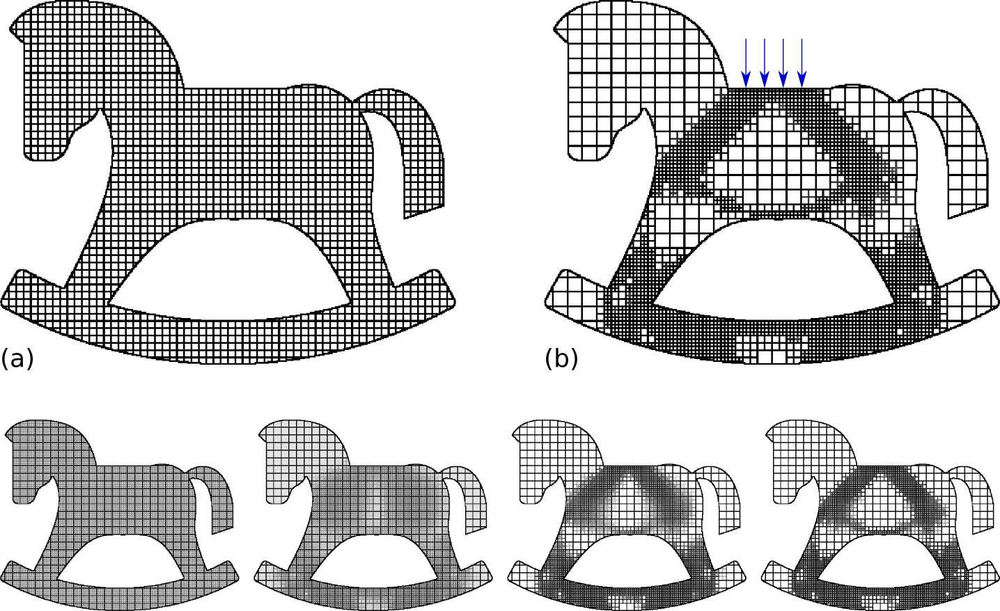
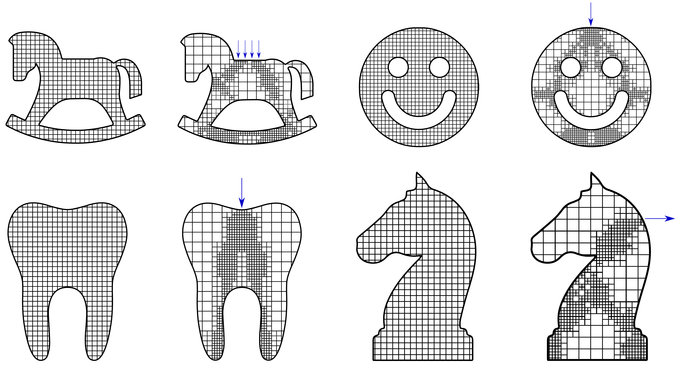
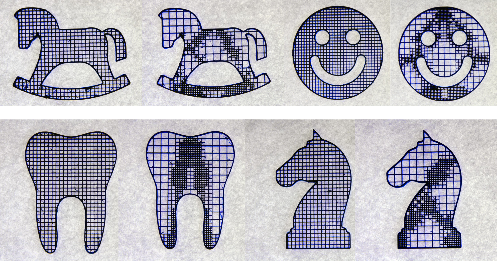

Continuous Optimization of Adaptive Quadtree Structures
Computer-Aided Design (CAD), 2018
Special issue of Solid and Physical Modeling (SPM) 2018
| Jun Wu |
| TU Delft |

The rocking horse is filled with a uniform rectangular pattern (a) and the continuously optimized quadtree structure (b). The adaptive quadtree is three times stiffer than the uniform pattern, regarding the prescribed loads which are indicated by blue arrows; The compliances of the uniform and adaptive pattern are 131.6 and 43.5, respectively. The two designs use the same amount of material. The bottom row shows the continuous quadtree at four iterations.
Abstract
We present a novel continuous optimization method to the discrete problem of quadtree optimization. The optimization aims at achieving a quadtree structure with the highest mechanical stiffness, where the edges in the quadtree are interpreted as structural elements carrying mechanical loads. We formulate quadtree optimization as a continuous material distribution problem. The discrete design variables (i.e., to refine or not to refine) are replaced by continuous variables on multiple levels in the quadtree hierarchy. In discrete quadtree optimization, a cell is only eligible for refinement if its parent cell has been refined. We propose a continuous analogue to this dependency for continuous multi-level design variables, and integrate it in the iterative optimization process. Our results show that the continuously optimized quadtree structures perform much stiffer than uniform patterns and the heuristically optimized counterparts. We demonstrate the use of adaptive structures as lightweight infill for 3D printed parts, where uniform geometric patterns have been typically used in practice.3D prints
 
Continuous quadtree optimization of the MBB beam.
Download
 |
Paper 7.3 MB |
|
Slides 1.9 MB |
 |
Code (Matlab) 26.0 KB |
Acknowledgements
We thank Rob Scharff for preparing the physical tests, and Krister Svanberg for the Matlab MMA code.
Related Projects
Minimum Compliance Topology Optimization of Shell-Infill Composites for Additive Manufacturing
Infill Optimization for Additive Manufacturing -- Approaching Bone-like Porous Structures
Self-Supporting Rhombic Infill Structures for Additive Manufacturing
A System for High-Resolution Topology Optimization
Bibtex
@article{Wu2018SPM,
author={Wu, Jun},
title={Continuous Optimization of Adaptive Quadtree Structures},
journal={Computer-Aided Design},
volume={102},
pages={72-82},
year={2018},
doi={https://doi.org/10.1016/j.cad.2018.04.008},
issn={},
}